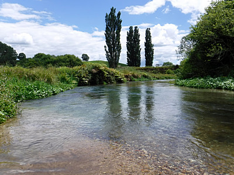
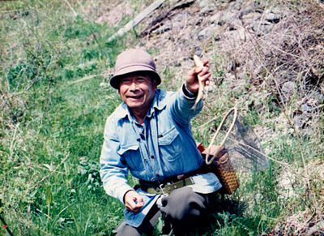
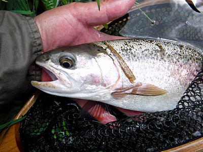

コラム
鱒と人との間にあるもの ヨーロピアン・ニンフィング、餌釣り、テンカラ、を巡っての雑想
懐かしい南ワイカトのスプリングクリークの岸辺に立つ。牧場の緑の中を蛇行する流れは速く、重く、冷たく、そして深く、川沿いには柳やポプラの木立や灌木の藪があり、フライキャスティングを困難にしている。留学中にはフライで大物を何尾か上げたこともあるのだけれど、今回の旅行では時間も限られているので、僕の技量に合ったお気楽なスピンフィッシングの釣り下りを楽しむ。

あれから15年あまりが過ぎて、いくらか鱒の数は減ったような気もするが、それでもニュージーランドで有数の魚影の濃さを誇るこの川から、可愛いレインボーたちがロッドを曲げて楽しませてくれる。なかには40cmクラスも混じる。
この川とその支流では、2008年3月に第 28 回のフライフィッシング世界選手権 World_Fly_Fishing_Championships が行われており、3日間の競技の間に、両河川で合計2,484尾の鱒が釣り上げられ、平均体長は約23cm、最大は56cmだったというデータが残されている。この小さな流れにも、そんな大物が潜んでいるのだ。釣れないのはこちらの腕の問題。
オークランド大学の Thomas Yee 氏による
大会結果についての考察レポート（PDF）
18カ国の参加チーム中で、団体の結果は１位からチェコ、ニュージーランド、フランス、ポーランド、イタリアとなっており、ヨーロッパ勢が上位を占めており、地元ニュージーランドチームが２位に入っている。この傾向は、以来10年近く続いている。2008年にこのスプリングクリークでヨーロッパ勢が競技で用いたのはおそらく、Euro-Nymphing などと呼ばれるニンフの釣り方だと思われる。こうした競技会での好結果、優位性が、最近のアメリカやイギリスにおけるヨーロピアンスタイルのニンフ・フィッシングの流行の原因となっているのだろう。
2018年のニュージーランド釣行後、興味がわいたので、アマゾンで「NYMPHING THE NEW WAY : French leader fishing for trout」という本を買い込んで斜めに読む。洋書が安く買えるようになったのは本当にありがたい。
ざざっと理解したところでは、Euro-Nymphing とひとくくりにされるが、ショートリーダーニンフのテクニックがポーランドで生まれ、チェコで発展し、フランスではロングリーダーテクニックが発達してきたようだ。フライロッドは 10～11ft とシングルハンドでは長めのタイプで、フライラインは2ないし3番ほどの軽いもの、ごく細いレベルラインもしくはダブルテーパーが推奨されているもよう。ノッテッド・テーパーリーダーは 3.5～4.5メートルで、その先に水深に応じてティペットを繋ぐ。途中に蛍光黄色＋オレンジ色の２色の "Sighter" と呼ばれるインジケーター役のモノフィラメントを挟むのがキモらしい。ニンフは主にビーズヘッドタイプを用い、２ないし３本を結ぶドロッパー仕掛けのようである。
You Tube で Euro Nymphing などのキーワードで検索すると、世界中のフライフィッシャーによる実演のビデオクリップが無数に現れて、便利な世の中になったものだと感心する。
ところが、ヨーロピアンスタイルのニンフ・フィッシングの動画を見てみると、長いロッドを使って、フライライン自体はほとんど出さずリーダーのみで、フォルスキャスト無しの振り込みで重いニンフを投げている。リーダーは適度に張ってナチュラルドリフトを保ちつつ、２色のインジケーター・リーダーの動きでアタリを感知して合わせているようだ。水面に浮くタイプのインジケーターは基本的には使わないようである。これは日本における渓流竿での餌釣りに限りなく近いのではないのか？ あるいはレベルラインでのテンカラ釣りか？
話は日本古来から伝わる毛鉤釣り：テンカラに変わるが、1997年につり人社「エキサイティング! NZスーパートラウト本流テンカラ」というビデオが発売されており、渡辺博氏が、和式毛針タックルを用いて、ニュージーランド北島の渓流で大物レインボーを釣っている姿が収録されている。サイトフィッシングで、見つけた鱒にできるだけ近くまでストーキングして忍び寄り和式毛針を振り込む。鱒は違和感なく喰い付くのだが、なにせリールが無いので掛けた後は大運動会である。上流へ下流へと引きずられ、何十メートルも走らされていたのが記憶に残っている。フライタックルで釣っていても走らされるので、これは当然のことだろう。曖昧な記憶だが、日本式のテンカラはリールが無いため、ランディングまでに必要以上に鱒を疲れさせてしまうので、フィッシュアンドゲームの規則でリール無しの毛針釣りは禁止されたという話を聞いたことがある。
アメリカでは、パタゴニアの創業者にして著名なフライフィッシャーでもあるイヴォン・シュイナード氏がテンカラを紹介・導入し、2014年に、「SYMPLE FLY FISHING : TECHNIQUES FOR TENKARA AND ROD & REEL」という本を他の釣り人と共著で出版しており、「地球丸」という出版社から邦訳も出ている。つい最近、改訂版が出たようだ。
この本では、あまりにも複雑化・高額化してしまったフライフィッシングの現状を批判し、安価でシンプルな道具立てでの釣りを提唱している。使うフライは、ニンフ・ウェット・ストリーマーが紹介されている。傑作なのは、大きな鱒や鮭！ がテンカラ・ロッドに掛かって取り込みが不可能になったら、思い切ってロッドを手放してしまえば、抵抗が無くなって安心した魚はしばらく時間が経つと岸辺近くに戻って来て休むので、近寄ってきたロッドをおもむろに回収すれば良い、運が良ければ泳がずに済む、という記述である。このテクニックはホキティカの元ガイド、ブリント・トロレイさんも同じ本を読んで知っていて、２人して笑ったものである。
こちらもユーロ・ニンフィング同様、ユーチューブやアマゾンで 「TENKARA」 などと検索すれば動画や書籍、Kindle本がザクザクと出てくる。中にはニュージーランドで撮影されたものもあるので、NZにおけるテンカラ禁止の話は僕の記憶違いだったのだろう。
ここでひとつの疑問が生まれる。
ヨーロッパやアメリカ、そしてニュージーランドなどで、延べ竿にフライリール無しのテンカラ：TENKARA が許容されるのであれば、日本の渓流で使われている餌釣り用の竿で、釣り人が巻いたニンフを使う釣り方は許されないのであろうか？ 餌釣りで本流の大物を狙う人たちが、専用のゴツイ竿でアラスカなどのサーモンに挑んでいる様子をテレビ番組で見たことがある。糸の先に付けるものは当然現地のレギュレーションに従っているだろうが、竿は長く強く作られた渓流竿である。スプリットショット（ガン玉錘）が規則違反ならビーズヘッドタイプかウェイトを巻き込めば良いだろう。インジケーターにはセルロイド製の物か蛍光ヤーンを短く結べば十分である。
ユーロ・ニンフィングでは11ft程度のロッドが長くて有利とされているので、約3.3mである。シュイナードによれば、テンカラ・ニンフィングに適した竿は、10ft半だということだ。僕が小学生の頃、アマゴの餌釣りを覚えた時にはまだ子供だったので二間（約3.6m:12ft）の竿だったが、名人だった父は大人でも短い竿が好みで、普通4.5m、大きな川でも5.4mほどの長さだった。4.5m（約15ft）では現代の餌釣りの基準では短い方になるだろうが、アメリカのロッドメーカー各社から売り出されている10～11ftのユーロ・ニンフィング専用フライロッドと思えばはるかに遠くのポイントを攻めることができるだろう。重いニンフの振り込みも楽だろうし。長くても、今の渓流竿はとても軽いので、一日中キャストを繰り返すフライロッドによるニンフィングよりは格段に疲れが少ないと思われる。
僕がアマゴの餌釣りを覚えて楽しんだのは、小学３年生から高専の１年生までの７年間で、それからルアー釣りを覚えて４年間楽しみ、20歳からは長兄の影響でテンカラを始めた。参考書は1978年に出版された、桑原玄辰さんの「毛バリ釣りの楽しみ方―ヤマメ・イワナのテンカラ釣り入門」
であった。太さの異なるナイロンテグス各種を買い込み、シコシコと手で撚り合わせて、ノッテッド・テーパーラインを自作したものだった。ハリスは 1.5号と、現代の渓流におけるフライフィッシングからすれば信じられない太さだったが、そんな太いハリスでも、自作の粗末な毛針でよくアマゴやイワナが釣れたものだった。竿は、当時は東京駅の近くにあった老舗「つるや釣具店」で買い求めた憧れのカーボン製テンカラ竿、3.3m : 約11ftだった。あの頃の価格で、13,000円くらいだったと思う。当時の釣友でフライフィッシングが上手かった岡田君とよく一緒に釣っていた僕は、それでも、ホームグラウンドであった新潟県の山岳渓流で釣るならば、フライフィッシングよりもテンカラの方が絶対に有利だと信じていた。何故ならば、竿の長さを利用して、主流をまたいだ向う側のポケットウォーターに、長いことフライを浮かべておけるからである。そのうちには無垢なイワナが顔を出したものだ。
当時の釣り雑誌などでは、自動車メーカーのキャッチコピー「いつかはクラウン」ではないが、釣りは餌釣りに始まり、ルアーに進み、最後にはフライフィッシングという貴族的？な階級構造が、暗黙の了解のように流布されていたように思う。これは階級を上がるごとに必要なタックルが高価になっていく、という釣り具業界やそれに従うマスコミの誘導でもあったのだろう。
昔に朔風社から出された「ヘミングウェイ釣文学全集 上巻 鱒」
という本の中の、“鱒の紳士的な釣り方”という一編（1920年4月のカナダ・トロントスター紙の新聞記事として、アーネスト・ヘミングウェイが書いた）にはこうある。少し長いが引用すると、アウトドア・ライフ関係の雑誌によって、毛鉤釣りだけが鱒の紳士的な釣り方である、紳士たるものはすべからく四十五ドルの四・五オンス竿にダブル・テーパーの道糸をつけ、九フィートのテーパーの鉤素をつなぎ、それに毛鉤を結んで鱒を釣るものだ、という信仰があまねく醸成されているようだ。
鱒釣りを金持ち階級の娯楽と化しつつあるこうした雑誌は、広告からの収益に経営を依存している。広告主たちが金持ち階級を狙うのは火を見るよりも明らかだ。アメリカ東部の川は、釣り人口に比して魚資源が乏しく、釣り荒らされて、餌釣りは禁止されている。そこを抜け目なくついて、高級な毛鉤釣り用具が宣伝され、雑誌記者たちは口裏を合わせて毛鉤釣りを誉めそやし、ことあるごとに餌釣りに難癖をつける。だが、記者たちがタイプライターで打ちつける、遙かなるビーバーキルやエソパスの流れでの洗練された鱒釣りの描写は、今は二十年前の夢物語なのである。
けれども老練の釣師は、新参の “釣り批評家” の寝言などに動じはしない。彼らはこうした風潮を泰然と笑って眺めているだけだ。餌釣りにも毛鉤釣りにもそれぞれの長所、短所があることを肝に銘じて知っているからだ。時季によって、毛鉤はいかなる餌をも寄せつけないほどの威力を発揮する。逆に川によっては、毛鉤では小物の鱒しか釣れないこともある。竿に糸をつけただけの餌釣りも、毛鉤釣りも、紳士的たり得ることに何の変わりもない。
なんと百年も前から、高価な釣り具の購入へと誘導する雑誌社の企み？！が指摘されていたのである。
こうした記述に続いて、この一編では、鱒釣りの好餌となるバッタの捕り方や鉤への付け方などが詳述されており興味深い。ヘミングウェイの傑作短編である「大きな二つの心臓の川」にも、フライタックルでバッタを使って大物鱒を釣り上げるシーンが出てくる。彼は優れたフライフィッシャーマンであったけれども、フライフィッシング至上主義者では無かったようだ。
開高健さんは、ミミズで釣って穴場を他人に教えない釣り人のことを「ドン百姓」と呼ぶのだ、と揶揄したアメリカの新聞記事の一節を、エッセイの中でしばしば引用していたものだったが。
現在のヨーロピアンスタイルニンフィングの流行は、世界選手権での優勢ぶりに影響を受けた釣り人たちのニーズと、釣り具産業・マスコミの複合体による宣伝の、いずれによるものかは判らない。しかし、各国の釣り具業界からはフライロッド、ライン、リーダー、インジケーター、ティペット、マテリアル、完成品ニンフに至るまで怒濤のごとく専用の用品が売り出されている。もっと釣りたいという釣り人の欲と、もっと儲けたいという釣り具・出版業界の欲とがマッチした結果であろう。
何をもってフライフィッシングと言うのか。何が「正統的」なのか？ それを考えると貧しいアタマが混沌としてくるが、ヘミングウェイが言うところの「紳士的」な心構えは忘れないようにしたい。
南ワイカトのスプリングクリークの畔に立ち尽くし、一昨年向こう岸へと旅立った父が、まだ若く元気な時にこの川へ連れて来て、餌釣りの竿にビーズヘッドタイプのニンフを付けて釣らせてあげたら、どんなにたくさんの鱒を釣り上げただろうか....と、かなわぬ想いが流れに乗って消えていった。


コラム 目次へ
サイトマップ
ホームへ
お問い合わせ